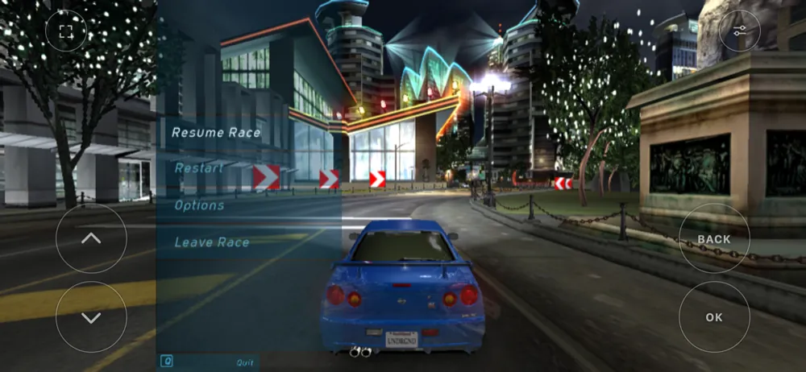

DirectX 9 y Windows XP reconstruidos sobre WebGPU, Web Audio y workers
El código traducido no basta. El juego abre ventanas, archivos y búferes de sonido, y pide una tarjeta DirectX 9. Unas 14,000 líneas de C y unos cuantos archivos de JavaScript contestan cada una de esas llamadas.

Una PC falsa de 2003
El host presenta una sola máquina y no se sale de ella: Windows XP SP2, un CPU, página de códigos 1252, el juego instalado en C:\NFSU, y una ATI Radeon 9800 Pro de 128 MB en un escritorio de 1920x1080. Cada función de Windows se escribe desde la documentación de Microsoft y no sabe nada del juego. Si el juego llama a un método que todavía no existe, se detiene con el nombre de ese método en vez de seguir con una respuesta equivocada.
Gráficos: de DirectX 9 a WebGPU
El juego dibuja con objetos de DirectX 9. El host guarda esos objetos en la memoria del propio juego y registra cada cuadro como una lista compacta de comandos. Cuando el juego presenta un cuadro, la lista pasa por un buzón en memoria compartida a la página, que la ejecuta con WebGPU. Los shaders del juego son bytecode de shader model 1; un traductor pequeño los decodifica y escribe WGSL, el lenguaje de shaders de WebGPU.
Sonido: un mezclador por software y un AudioWorklet
DirectSound le da al juego búferes de sonido en su propia memoria. Un hilo mezclador los lee como una tarjeta de sonido de 2003 leía los suyos, a 44.1 kHz, y escribe en un anillo de memoria compartida. En la página, un AudioWorklet reproduce ese anillo y se resincroniza cuando los dos relojes se separan.
Hilos: reales, uno a la vez
El juego arranca varios hilos. Cada uno se vuelve un hilo real (un Web Worker en el navegador), pero un candado global, repartido por turnos, deja que solo uno ejecute código del juego a la vez. Un hilo suelta el candado solo donde Windows lo bloquearía: dormir, esperar, una sección crítica ocupada. El código traducido no necesita operaciones atómicas, y el juego sigue viendo hilos reales. La memoria compartida entre workers es la razón de que el sitio se sirva con aislamiento de origen cruzado.
Archivos: un disco duro en internet
El juego lee sus archivos con llamadas normales de Windows. En el navegador, un hilo lector convierte cada lectura en una petición HTTP por rango de bytes, síncrona dentro de su worker, así el juego espera igual que esperaba a un disco duro de 2003. Cómo se volvió lo bastante rápido por internet es otra historia: carga y hosting.
Controles y partidas
DirectInput se reconstruye con un teclado y un ratón. Los mandos y los botones del celular se traducen a los códigos de teclado que el juego espera, así su propio menú de controles sigue funcionando. La carpeta de partidas vive en memoria y se copia al almacenamiento del navegador un momento después de cada cambio.
Cada archivo nombrado aquí está en GitHub.
En el repo: host · host/d3d9.c · host/gpu.c · web/gpu.js · host/dsound.c · host/threads.c